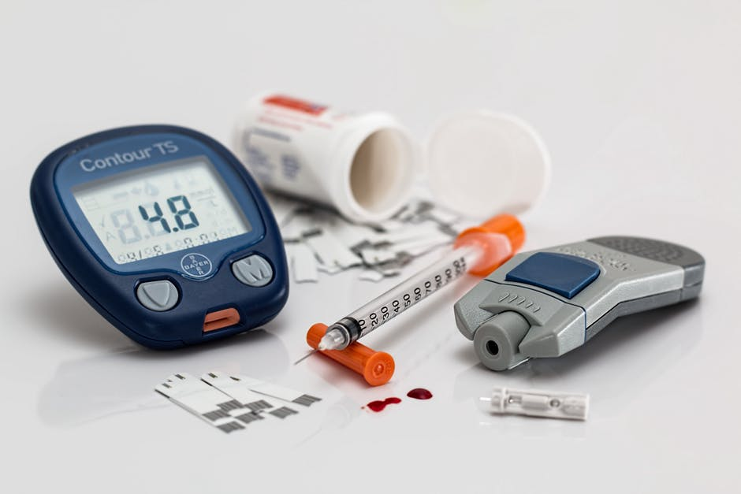
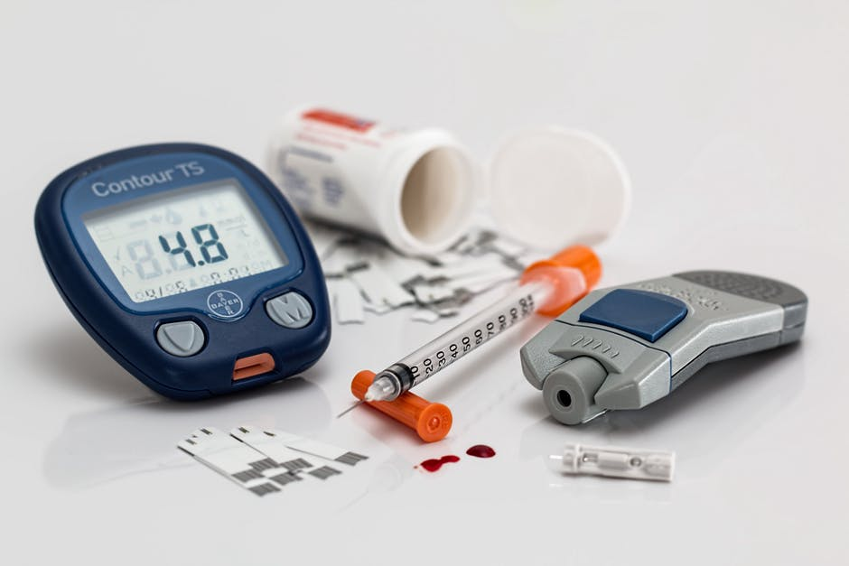
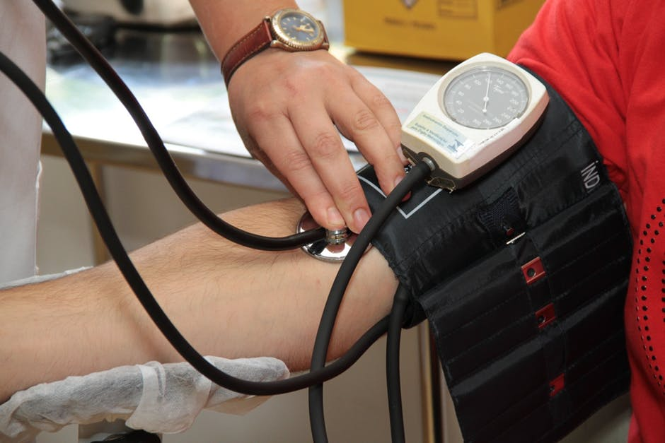
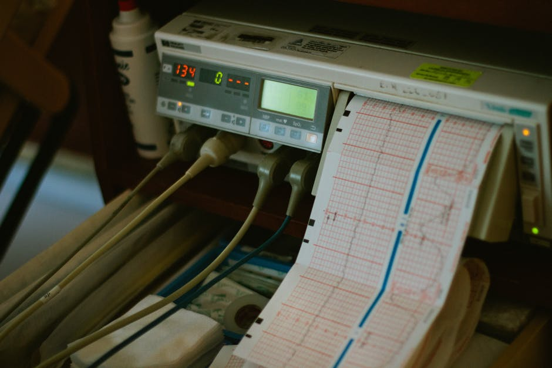
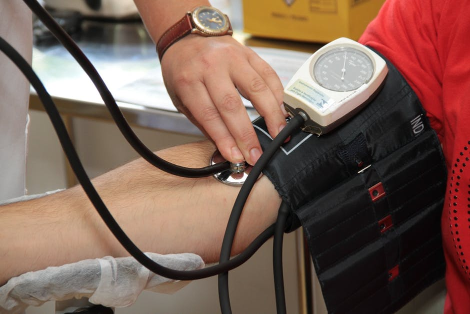
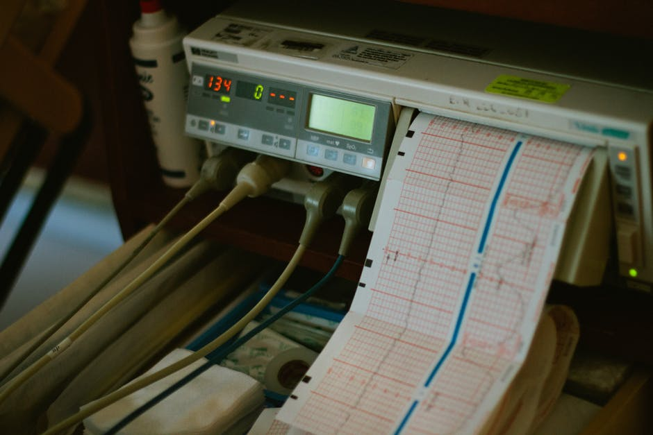

Control de
Ausentismo
El control de ausentismo nos permite asistirlo a usted en un servicio integrado, eficaz y eficiente para reducir inasistencia laboral en su empresa.
Sabemos que reduciendo el ausentismo laboral aumenta su capacidad productiva y su rentabilidad, por ende mejora la relación laboral y comercial con sus clientes.

Nuestro servicio
- Control domiciliario con médicos y móviles propios.
- Atención los 365 días del año.
- Cobertura en CABA y GBA.
 

 


